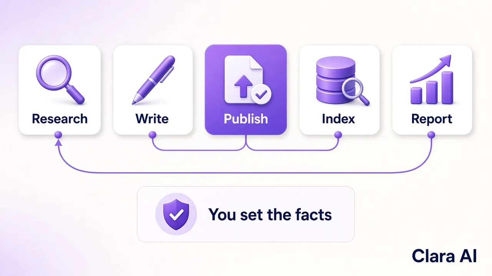

AI SEO blog automation means software runs your blog's repeating work for you: it picks buyer keywords, writes answer-first posts, publishes them with internal links, asks Google to index them and reports the results. A person still sets the facts and direction. For B2B teams with no writer or SEO staff, it is the way to publish steadily without hiring.
We run it on our own site. Our AI SEO agent publishes a new post on claraai.tech every day, and organic sessions grew +28% from 10–25 Oct vs 24 Sep–9 Oct 2026 (our own Google Analytics).
A blog is a loop that repeats every week. Most B2B blogs stall because nobody has time to run the loop. Automation takes over these steps:
If you want the basics first, read What is an AI SEO agent?

Automation is not a reason to stop thinking. Three things should stay with you:
After that, your job shrinks to a short weekly check of the numbers and a yes or no on new directions.
It can be, if the content is good. Google's guidance on using generative AI content says that AI is not against its rules by itself, but using automation mainly to produce pages that manipulate rankings is spam. What counts is whether a page is helpful, original and written for people.
In practice that means:
Ask the provider these questions before you sign anything:
| Ask this | A good answer | A warning sign |
|---|---|---|
| Where do the facts come from? | Your approved facts sheet | "The AI knows your industry" |
| Who picks the topics? | Chosen by buyer intent, agreed with you | Random keyword lists |
| Does it publish and index? | Yes, on your site, with internal links | You get a document and paste it yourself |
| What do you report? | Clicks, rankings and real enquiries | Number of posts only |
| What happens to a bad post? | Checked before it goes live and fixable after | No review step |
For a wider comparison with agencies and tools, see AI SEO agent vs SEO agency vs SEO tool.
It fits B2B companies where each customer is worth a lot, buyers search before they call, and nobody on the team can own the blog. Manufacturers, distributors, software firms, consultancies and B2B service companies are typical.
It is a poor fit if you only need one article, sell to consumers on social media, or want volume without checking quality. It also needs patience: organic traffic builds over weeks, not days. You can see real dated numbers, and what we would not read into them, in our AI SEO agent case study.
Our AI SEO Agent starts with a short conversation about your business, your buyers and the pages that matter most. We agree the facts, topics and tone once. Then the agent publishes on schedule and sends you simple weekly numbers.
The same approach works for outreach. Our AI LinkedIn Outreach Agent sends replies to you on WhatsApp, so buyers who read your posts can also hear from you on LinkedIn. Clara AI is a team of 14 that builds AI agents for 19 businesses. Tell us what you sell and who you want to reach, and we aim to show you a first demo within 7 days.